우리 교회 방송실, 이제 4K 예배 방송 시대를 준비하세요 선명함을 넘어 생생한 현장감으로!
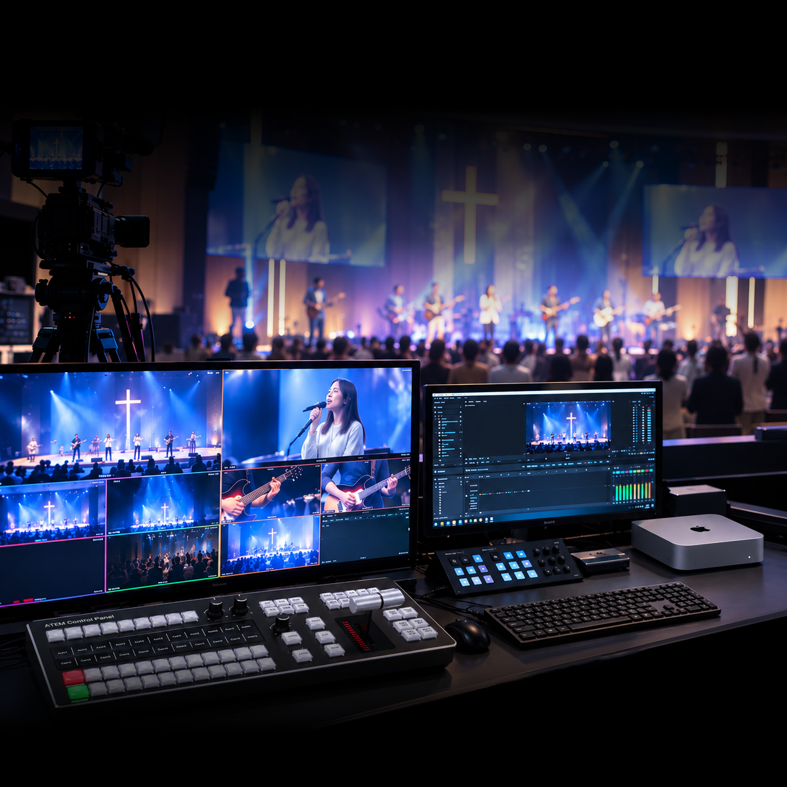
ㅣ
블랙매직디자인 4K 방송실 핵심 장비 패키지 (10채널)
10채널 4K 스위처 + 4K 엔코더 + 컨트롤패널 + 랙쉘프
-
FHD부터 4K까지 지원되는 10채널 스위처
-
끊김 없는 고성능 다이렉트 스트리밍
-
복잡한 방송실을 단정하게! 깔끔한 랙 장착
-
컨트롤 패널 하나로 스위처 & 엔코더 한번에 제어
차세대 방송을 위한 4K 방송실 패키지
이제는 4K를 준비해야 합니다!
더 선명하고 생생한 화질로 예배의 감동을
더욱 풍부하게 전달할 수 있습니다.
더욱 풍부하게 전달할 수 있습니다.
패키지 구성품
교회 규모와 예배 환경에 맞는 맞춤 상담부터 설치, 세팅, 교육, 사후 지원까지 체계적으로 제공하여 안정적인 자막 운영 환경을 지원합니다.-
ATEM 1 M/E Constellation 4K
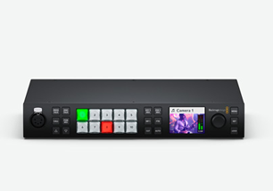
-
Streaming Encoder 4K
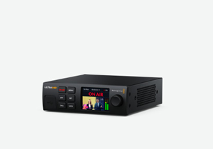
-
ATEM Control Panel SMC-50A-G2
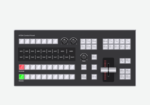
-
Universal Rack Shelf
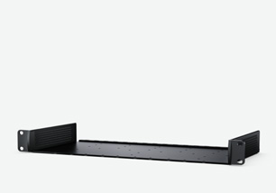
아직도 FHD에 머물러 계신가요? 우리 교회 예배 방송, 이제는 4K를 준비해야 합니다!
ATEM 1 M/E Constellation 4K
강력한 라이브 프로덕션 스위처로 10개의 표준 변환 12G-SDI 입력과 6개의 12G-SDI 보조 출력, DVE, 4개의 ATEM Advanced Keyer, 16가지 방식의 멀티뷰, 미디어 플레이어, USB 웹캠 출력을 지원합니다.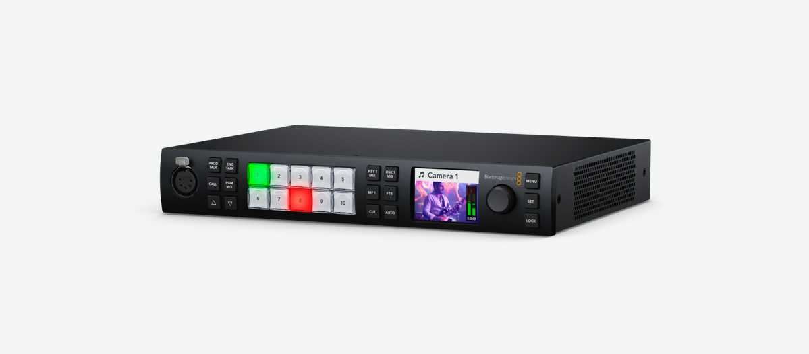
- 10채널 스위처
- 6개의 SDI 출력
- 8채널 오디오
- 12G 멀티뷰
- 미디어 플레이어
- USB 웹캠 출력
스트리밍 엔코더 4K
SRT 또는 RTMP 프로토콜을 통해 YouTube 같은 서비스에 HD 영상을 스트리밍할 수 있는 H.264 및 H.265 스트리밍 프로세서로, USB 웹캠 출력 및 표준 변환 지원 12G-SDI 입력, 모니터링 기능을 탑재했습니다.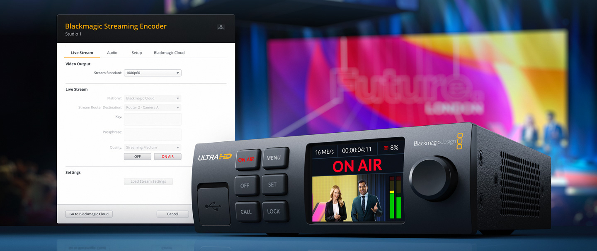
- 강력한 하드웨어 인코더
- 다양한 프리셋을 지원
- 라이브 스트리밍
- 점대점 인터넷 기반
- 기술 모니터링 기능 내장
- Streaming Utility 무료 제공
SODA SMC-50A-G2
상단의 7개의 멀티 기능 버튼을 통해 자주 사용하는 기능으로 (Aux, Aux Output, M/E) 설정할 수 있습니다.(*SHIFT 키와 조합하여 최대 14개의 멀티 기능 버튼 사용 가능)
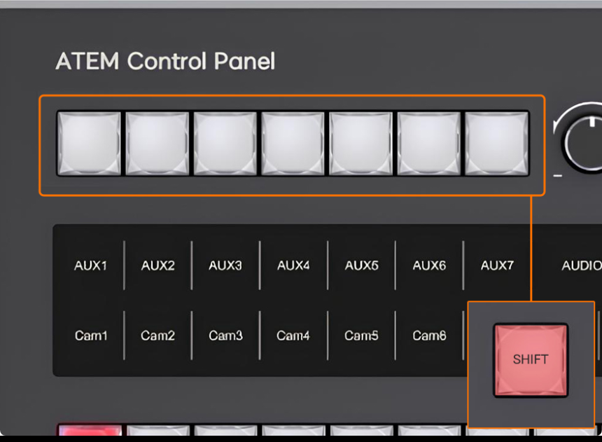
- IP 제어로 간단 사용
- 최대 20채널 지원
- 원하는 데로 커스텀
- 스트리밍 ON 버튼지원
- 편리한 PoE 탑재
- 전문적인 스위처 운용
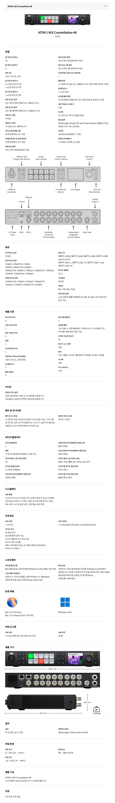
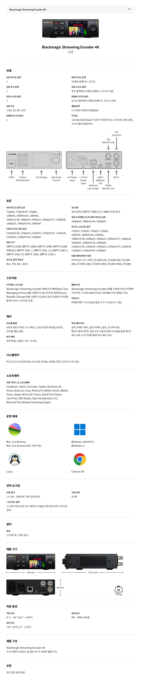
SODA SMC-50A-G2 제품 사양
| Key Features | |
|---|---|
| Audio Control | 1 channel Master + 2 channel Inputs |
| Transition Control | Automatic transition, Cut, T-Bar |
| LCD Display | Button custom function display and display menu |
| Button | Red, Green, Orange-Yellow Tri-color Crystal Buttons |
| Wired Tally | 12-channel PGM + 12-channel PVW |
| Wireless Tally | 12 tally lights (optional) |
| T-BAR | Aluminum alloy high quality T-BAR faders |
| Knobs | Three-dimensional knob, scale rotation to adjust parameters |
| ATEM Related Features | |
| Connection | 100M LAN, support POE 802.3af |
| Video Control | 10-channel PGM + 10-channel PVW |
| Transition Effects | CUT / MIX / DIP / WIPE / STING / DVE |
| Upstream Key | KEY1 / KEY2 / KEY3 / KEY4 |
| Downstream Key | DSK1 / DSK2 |
| SHIFT | support |
| PREV TRANS | support |
| MACRO | support |
| M/E | support |
| AUX | support |
| Clean Feed | support |
| T-BAR | support |
| Audio Mixer | support |
| Custom Knob Functions | |
| F1 | support |
| F2 | support |
| VOLUME | support |
| Power Supply | |
| Input Voltage | DC 12V |
| Input Current | 0.3A |
| Rated Power | 4W |
| POE Power Supply | POE 802.3af |
| Other | |
| USB-A port | External USB flash drive for upgrades |
| USB-B port | No current functionality |
| Usage Environment | |
| Operating Temperature | -10°C ~ 40°C |
| Storage Temperature | -20°C ~ 60°C |
| Dimensions & Weight | |
| Dimensions | 354 × 165 × 92mm (with push rod height) |
| Weight | 1.5Kg |
FAQ 자주 묻는 질문
고객님들의 자주 묻는 질문과 답변을 모았습니다.-
Q. 4K 방송을 위해 카메라도 4K 제품이어야 하나요?
A. 4K 해상도로 예배 방송을 구성하려면 카메라를 비롯해 스위처, 인코더 등 주요 영상 장비가 4K 신호를 지원해야 합니다. 기존 장비와의 호환 여부는 구성에 따라 확인이 필요합니다.
-
Q. 이 패키지만 구매하면 4K 예배 방송이 가능한가요?
A. 본 패키지는 스위처, 4K 스트리밍 인코더, 컨트롤 패널, 랙쉘프로 구성된 방송실 핵심 장비 패키지입니다. 카메라, 모니터, 케이블 등은 별도 구성으로 예배 환경에 맞춰 추가하실 수 있습니다.
-
Q. 기존 FHD 방송실에서도 4K로 업그레이드할 수 있나요?
A. 기존 방송실의 카메라와 주변 장비가 4K 신호를 지원하는지 확인한 후 필요한 장비부터 단계적으로 업그레이드할 수 있습니다. 기존 장비를 최대한 활용하면서 4K 환경으로 전환하는 구성 상담도 가능합니다.
소다미디어
고객센터
카카오톡 채팅 상담
 QR 추가
QR 추가
QR 추가
© 2026 소다미디어. All rights reserved.